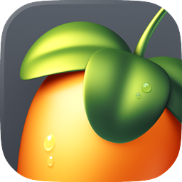
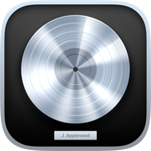
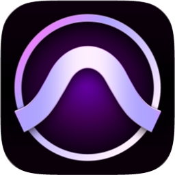
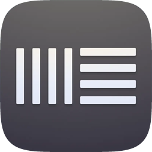
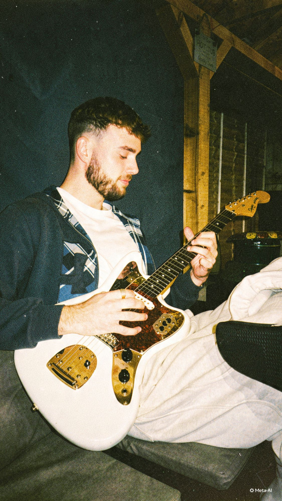

Music production, recording and sound design by Tom
From original music and studio recording to mixing, mastering and sound design for visual media, I help bring creative ideas to life.
Work
-
Fade--:--
-
Spanish Drill with Prod.Bingoo--:--
-
Bounce--:--
-
RnB Type Beat--:--
-
Basic with Lucz--:--
-
GreenLight with Bookz--:--
-
NOW--:--
ProdbyTom/Tom Maflin
I’m Tom Maflin, a producer, engineer and musician with a lifelong passion for music. I play drums, keys and guitar, and work across electronic music production, recording, mixing, mastering and sound design.
I help artists shape their ideas into finished tracks, combining practical studio skills with strong digital organisation and project management.

FL Studio
Logic Pro- Dolby Atmos

Pro Tools
Ableton Live

Music production
I produce original beats and instrumentals across a range of genres, and work with artists on arrangements, drum programming, sounds and overall direction. I’ve built a catalogue of more than 2,000 original beats and continue to produce and license work through BeatStars, YouTube and direct collaborations.
Recording and vocal production
I run recording sessions for vocals and instruments, from setting up the session and microphones to editing takes and helping artists get the performance they want. I’m comfortable working in both DAW-based and analogue recording setups.
Mixing and mastering
I edit, mix and master music for release, using EQ, compression, effects and creative processing to bring the parts together. I also organise sessions and prepare clearly labelled files and final exports.
Sound design for visual media
Through academic and project work, I’ve designed and edited Foley, created sound effects, and redesigned audio for gameplay footage. I enjoy building a sound world to fit the brief and balancing dialogue, music and effects into a cohesive final piece.
My testimonials
“Working with Tom is a blessing as an artist, as he knows how to adapt to your music and give pointers on how to tweak and advance your sound to the next level! I have had multiple sessions in the studio with Tom and it has opened my eyes to different possibilities and routes I could take in my music career, also making different genres that I had not thought of making before.
I would definitely recommend ProdbyTom to any artist that is looking to level up or advance in their music career.”
“I’ve been working with ProdbyTom for over a decade. Watching his growth into a professional, high-standard producer has been nothing short of inspiring. His acute attention to detail and high quality standards push me as an artist to always reach higher and do better. Tom finely balances these standards with an innate ability to find fun in the process and keep the sessions light-hearted.
A decade of co-producing and writing music together has shown me how important people like Tom are to the music industry. An immense producer and a truly humble human being.”
“Tom was a great student with excellent technical and creative ability with a professional attention to detail.
His music was of a commercial release standard which made for great examples for other students.”
“Working with Tom was a great experience, especially as it was our first time recording in a studio. He made us feel comfortable throughout the sessions, was patient and helpful, and guided us through the recording process. We really enjoyed working with him and were happy with what we created together.”